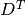
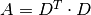

array([[ 3., 2., 1., 1., 1., 1., 1., 1., 1.],
[ 2., 2., 0., 0., 1., 1., 1., 0., 1.],
[ 1., 0., 1., 1., 0., 0., 0., 1., 0.],
[ 1., 0., 1., 1., 0., 0., 0., 1., 0.],
[ 1., 1., 0., 0., 1., 1., 0., 0., 0.],
[ 1., 1., 0., 0., 1., 1., 0., 0., 0.],
[ 1., 1., 0., 0., 0., 0., 1., 0., 1.],
[ 1., 0., 1., 1., 0., 0., 0., 1., 0.],
[ 1., 1., 0., 0., 0., 0., 1., 0., 1.]])
15. Social Network Analysis¶
Chinese proverb
A Touch of Cloth,linked in countless ways. – old Chinese proverb
15.1. Introduction¶
15.2. Co-occurrence Network¶
Co-occurrence networks are generally used to provide a graphic visualization of potential relationships between people, organizations, concepts or other entities represented within written material. The generation and visualization of co-occurrence networks has become practical with the advent of electronically stored text amenable to text mining.
15.2.1. Methodology¶
Build Corpus C
Build Document-Term matrix D based on Corpus C
Compute Term-Document matrix 
Adjacency Matrix 
There are four main components in this algorithm in the algorithm: Corpus C, Document-Term matrix D, Term-Document matrix and Adjacency Matrix A. In this demo part, I will show how to build those four main components.
Given that we have three groups of friends, they are
Corpus C
Then we can build the following corpus based on the unique elements in the given group data:
The corresponding elements frequency:
Document-Term matrix D based on Corpus C (CountVectorizer)
Term-Document matrix
Adjacency Matrix
15.2.2. Coding Puzzle from my interview¶
Problem
The attached utf-8 encoded text file contains the tags associated with an online biomedical scientific article formatted as follows (size: 100000). Each Scientific article is represented by a line in the file delimited by carriage return.
Write a program that, using this file as input, produces a list of pairs of tags which appear TOGETHER in any order and position in at least fifty different Scientific articles. For example, in the above sample, [Female] and [Humans] appear together twice, but every other pair appears only once. Your program should output the pair list to stdout in the same form as the input (eg tag 1, tag 2n).
My solution
The corresponding Co-occurrence network:
Then you will get Figure Co-occurrence network
15.3. Appendix: matrix multiplication in PySpark¶
load test matrix
main function for matrix multiplication in PySpark
Validation with python version
15.4. Correlation Network¶
TODO ..